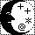

- The netlib
scientific computing repository (mirror:
TN, Sandia)
Holds software to compute just about any function,
simulation, or other theoretically interesting algorithm
you might care about.
- Metre Version 2.3, a rulebased
ANSI C parser
-
The freely distributable, ftpable archive
comes with rule sets for a metrics tool and a calltree tool.
- SPLint, formerly LCLint,
a lintlike tool for ANSI C
- David Evans,
Yang Meng Tan
et al. based their C program checker on LCL,
a member of the Larch
family of specification languages.
SPLint, about which David wrote his master's thesis,
can either check whether ANSI C code conforms to
specifications written in LCL,
or function as a "plain" ANSI C
lint.
- dcc, a C checker from the Ecole Superieure d'Electricite
- was described in the December 1995 issue of the ACM SIGPLAN
Notices - and only there; the source code in their
FTP directory comes without a manual page. (Their
readme file offers some guidance,
but only after you've scrolled past a description of
their implementation modules.)
- The
lcc Retargetable Compiler for ANSI C
- Christopher
W. Fraser (formerly of AT&T Bell Labs, now at Microsoft)
and David
R. Hanson (formerly of Princeton University, now at Microsoft)
plug their
compiler
and the book about it in a welldesigned, informative subtree
that lets you browse the lcc code and manual page before you ftp it,
offers the book's preface and table of contents, and now also the
(short) erata sheets for
first and
second
printing.
- LCC-Win32:
a compiler system for Windows 95 - NT
- Jacob Navia and others have ported the lcc compiler to win32 and
are well on their way towards a free development
environment - with debugger,
dump tool, a make program, and an editor. The binaries
are free; the system's source can be bought for 600 French Francs,
that's about US $100.
- EiC:
An extensible interactive C interpreter/compiler
- Ed Breen is developing this free, byte-code based
C interpreter/compiler system. EiC runs single translation
units in modern C (but no un-prototyped
functions or internationalization) with new "safe" and
"unsafe" pointer qualifiers.
It has been widely ported, including to PalmOS, various
flavors of Unix, and Windows.
- Bounds checking extension to GCC
-
Patches that convince various versions of GCC to generate code
that checks pointer validity at runtime.
The result catches accesses to free()'d pointers,
out-of-bounds array elements, and to automatic variables past
their duration.
- DJGPP
-
DJGPP is a 32-bit C/C++ development system for Intel 80386
(and higher) PCs running DOS, based on ports of many GNU
development utilities. DJ (first name, not initials)
Delorie's site collects pointers to the newest release, history,
documentation, the FAQ, and archives of the mailing list.
- Digital Mars C/C++
-
While the full Digital Mars C/C++ environment is sold on a CD
for a nominal free, many of the pieces can be downloaded
for free, among them the compiler binary, DOS libraries, basic
command line utilities, and ports of the STL and of Hans Boehm's
garbage collector.
- cs1005,
Introduction to Programming in C
-
The seven-week long course, with three classes per week, four exams,
and four problems, is extraordinarily well-represented on the web,
complete with GIFs of the slides and notes about the Unix
tools used.
- C and
C++ style guides
-
Christopher Lott maintains this short, plain page
with links to style guides, coding rules, and
discussions from USENET.
- A tutorial
on pointers and arrays in C
-
Ted Jensen wrote ten chapters about this difficult aspect of C,
drawing on his experience discussing pointers and arrays in forums
like FidoNet's C Echo and USENET's comp.lang.c newsgroup.
He knows his subject and the writing is
consistent; if your books and Steve Summit's comp.lang.c FAQ
didn't help, perhaps Ted can.
(The tutorial's welcome page also offers archived HTML and
ASCII versions for download.)
- Eddie's Basic Guide to C + HTML
-
Eddie Wong maintains this set of about 30 short tutorial units
for beginners.
- Learn C/C++ Today
-
Vinit Carpenter has moved the list of tutorials and books
from his Linux PC to cyberdiem.com.
- The Ground Cero Guide To C
-
Henrik Aasted Sorensen's highly PC-specific, introductory tutorial
explains a C program from the first line on in an informal dialogue
between reader and author.
- 1. Int'l Kaiserslautern Shortest C Contest
- 375 participants tried to write the shortest (and some
the most obfuscated) C program that counts from its first argument
to its second. Nils Magnus' and Peter Conrad's
subtree has all the submissions and the rules;
their evaluation
was posted to comp.lang.c in early March 1995.
- The C Standard Library and Selected Help on ANSI C
-
Ross Richardson from the University of Tasmania, Australia
has collected this brief Standard C quickreference.
It's not what you want as a first introduction, but mostly
correct - and the library quickreference is great for refreshing
one's memory of what the order of parameters for qsort() was, or
wheter it's CHAR_BITS or CHAR_BIT.
- C Programming
Reference
-
Looking for an online C programmer's reference, Martin Leslie found
only tutorials; consequently, he attempted to fill this gap in online
C documentation himself. By now, Gary M. Greenberg has stepped
in to help maintain the material.
- EL165
Introduction to Computing
-
Martin Brown at the University of Southampton uses C in his Introduction
to Computing. The course materials, converted from their TeX source,
make a reasonable tutorial; they are accompanied by slides, example programs, and
two assignments.
- ANSI C
Programming
-
Phil J Willis' introductory ANSI C tutorial. Parts of
it are not yet
fleshed out, parts of it are wrong; but the writing is above average.
- PR 101: An introduction to C programming
-
Brian Brown's tutorial, complete with problems, solutions, and
formbased multiple choice tests,
is part of a set of courseware documents from the New Zealand
Central Institute of Technology.
- C in the
Free Online Dictionary
of Computing
Both the general dictionary and the entries on C and neighboring
topics are excellent. It's a place to get lost in
while browsing, make new connections, and pass on some of one's
own knowledge to others.
- U of Toronto
-
The Computer Science department of the University of Toronto, Canada,
keeps an original collection of texts on Unix programming, among them
the classic "Can't Happen or
/* NOTREACHED */ or Real Programs Dump Core" by Ian Darwin and
Geoff Collyer, an uptodate copy of the
Indian Hill
style guide, and Henry Spencer's
"How To Steal
Code or Inventing The Wheel Only Once."
- Programming: C
Howard Fear has a good sense of organisation, but spent
little effort maintaining or originally creating what
is otherwise a good first set of resources.
- The Association of C and C++ Users (ACCU)
-
This UKbased nonprofit user and
vendororganization reviews software and books on C and C++,
publishes newsletters, and generally lobbies the
British Standards Institute.
- FAQ in de.comp.lang.c
-
About a dozen German USENET readers have taken the trouble
to translate Steve Summit's C FAQ into German; apart from
the fancy hypertext version, there's also
a copy as
plain text.
- The C/C++ Users Journal
-
Sorted by year and month, CUJ's site
serves compressed tar files with the source listings for the
corresponding issues, from 1990 to the current one.
- C Programming Language References at UWO
-
Mixed with a good selection of site and book references,
James Blustein's Scholarly Resources for CompSci Undergrads
present short notes on K&R II, on debugging, and a longer
example of how to encapsulate a data type in C.
- The C programmer's pages
-
Rutger van Bergen likes C and has written a number of original
documents detailing aspects of the language: its relationship
to Pascal, Unix, C's history, pointers, header files, etc.
- Tower Floor -- C Programming
One location in Anthony Thyssen's charming maze of towers
and floors is dedicated to a loose collection of ASCII documents
on (frequently Unix-specific) C programming.
- The EE Compendium: Embedded C Code Cache and C Cross-Compilers
-
Randy Rasa lists cross-compilers to 8051,
PIC, and 68HC11 environments, both commercial and free.
He's used many of them and comments in terse, factual paragraphs that
read well; some link to longer, more detailed reviews.
The "Embedded C Code" archive mixes some unspectacular
utility functions ("convert a long to a string") with more
arcane knowledge about how to talk to particular hardware.
- Peter Seebach's Useless C Page
-
Another comp.lang.c.moderated co-moderator showcases his
original documents: the "Infrequently Asked Questions,"
a few libraries, and errata for K&R II and a Schildt book.
- Charles Winner's C and C++ resources
-
In the last few months, this site has grown to a
general-purpose list of the usual tutorials, source ftp sites,
and FAQs for C, C++, and Objective C.
- Steven Pemberton's enquire.c
-
Striving to determine arithmetic properties of a platform
at compile time in a pre-ANSI C world, Pemberton
resorted to an investigative program that tests language
properties and can reconstruct the <limits.h> and
<float.h> header files from them. Even if you're
not into floating point intrinsics, the code is worth
reading for its quaint use of the preprocessor alone.
- isomac.c
-
If you already have "gcc" and a shell installed, Jens Schweikhardt's
small C program lists missing C Standard header files and a
subset of any nonstandard macros #defined in the system headers.
- c2ib - a Perl/STL-like library
of basics for C
-
Richard Jones offers a collection of well-documented functions to
make life easier for C programmers that miss the versatility
and comfort of Perls string functions and C++'s STL collection
types.
- Collection of Jörg Schön's C-programs
-
ANSI C utilities, with Unix-style Makefiles.
You'll find a few simple header file generators, message tables,
inlined quicksort and heapsort routines,
B-trees, Wirth's "bigsort", and yet another ANSI C testsuite.
- Christophe Colle's C Stuff
-
Below the overblown inline JPEG, Christophe's short HTML pages
discuss common problems C programmers face: how to handle
"undefined symbol" linker errors, how to read a character
at a time, or when to allocate memory for C's string
functions.
- God vs. K&R
-
Luis Fernandez presents Alan Morgan's follow-up to "Clarence
L. Thomas IV"s USENET posting from 1994. In his hilarious
comment on this "the world is ending, repent!" spam, Alan puts a
hacker spin on old religious ideas and concludes with his
ten commandments of K&R.
- Top 10 Ways to get screwed by the "C" programming language
-
Dave Dyer has been bitten once too many,
and now fights back by presententing this angry list of bugs that,
aggravated "by the poor design of the "C" language,"
caused him at least half a day of bother.
- The Case Against C
-
P.J. Moylan's technical report for the
University of Newcastle,
Australia, complains about C's conciseness, its age, pointers,
appeal to BASIC programmers, and lack of support for modules.
(This paper is one source of the historically inaccurate claim
that *p++ was in C because of a PDP-11 instruction.)
- Programmiersprache C
-
The materials for the C language class at the University
Gießen include German-language lecture notes on K&R C
by Dr. Kurt Ackermann and copies of some documents
from the Lysator site.
